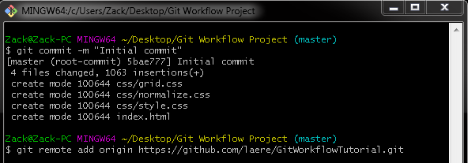

About Git
Git is a free and open source version control system. Git is very easy to learn and allows programmers to work in an effective and fluid manner
For more information on Git check out the Git website here
Elevate your workflow
Git is a free and open source version control system. Git is very easy to learn and allows programmers to work in an effective and fluid manner
For more information on Git check out the Git website here
The goal of this tutorial is to show the beginning programmer a quick introduction into a effortless Git workflow.
There are so many Git commands that it can be overwhelming sometimes to learn Git at first, however I am to achieve the understanding of this version control system in a concise and simple manner. I recommend that you go through this tutorial multiple times just so you can get into the habit of this simple workflow.
There is definately more to Git that you will want to learn, and I encourage you to always be learning. After this tutorial I will be posting other small sections on specific git scenarios that you will be using in a real-life job setting and if you're planning on working on an open-source project.
The first step into setting up a workflow is to log into your Github account to create a repository. If you need an account head over to Github and create an account.
After you have logged in, or created your account, head into your profile and you will see a UI that looks like this:

In the top right area you will see a green button that says New. Click that button and it will bring you to a page that allows you to name and create your repository.
Here you see a field to name your repository (repo for short) and a field that allows you to add a description for what your repo is going to be.

After naming your repo and adding a description ignore intializing the repo with a README, license, or .gitignore file and click create repository. We can add the former files later when needed.
The next step is to download Git Bash. Git Bash is going to be the command line program we use for all of our workflow commands. Essentially we will be connecting from Git Bash directly to our remote repo that we just created on Github.
You can head over to the Git website and download the client for your operating system.
Now that you have Git downloaded open it up and you will see a command line window such as this:
Now we want to create a folder on your Desktop for your project so we can link it up to our remote repo. After you create your folder use Git to change to change to that folder's directory shown here:
We use the command cd (short for change directory) to change to our created folder. If your folder name has spaces, such as mine, then use quotes around it when using the cd command else no quotes are required.
Now we want to intialize our new folder with a .git folder. For this we do the basic command git init.
The .git folder contains all the information that you need for your project in version control. It has information about comments, remote repo addresses, a log with your commit history and more.
After intializing your folder with a .git folder you will want to add any of your files/folders for your project into your project folder. Once you have added your project files/folder you will want to run the command git add -A.
This adds all of those files to the staging area where you can then commit those files to your remote repo. Everytime you are working on a project and make any changes to any of your files using this command will adds those changes to the staging area where you can then commit them.
After you add all of your files to the staging area you then want to commit those files to the local repo before we upload the changes to the remote repo. We use the command git commit -m "message" to commit the changes. Make sure your message is clear and concise on what the changes consist of. In this example we're just doing an initial commit of the files/folders of our local repo (local folder).
After we commit our changes we then want to add our local repo changes to the remote repo by using the git remote add origin "url" command. This then ties our local repo/folder to the remote repo we created in Steps 1 and 2.
The final step is pushing our changes to our repo. The default branch of the repo is the master branch. We use the command git push -u origin master to finalize the push to the remote repo. You can see an example below.
After this has been done all of your local repo/folder files have now been uploaded your remote repo on your github account.